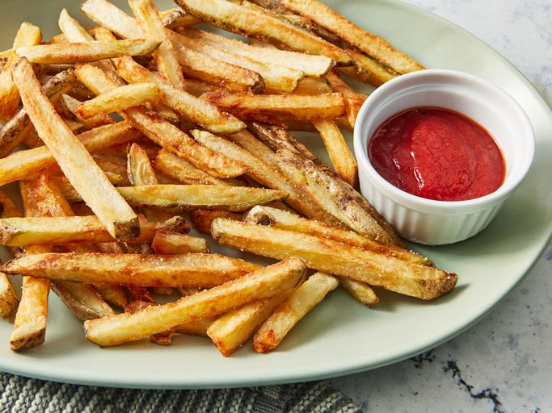

French Fries

Description
This French fries recipe is made using a clever, proven
cooking method that guarantees crispy fries - and they STAY
crispy for ages!
- 500 grams potato
- 2 cups of oil
- salt
- black pepper
- paprika
- Cut the potato
- Wash it
- Season it
- put oil in a pan
- fry it at high heat for 10 mins
- add some ketchup at the end